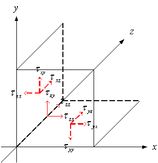

・物理
流体力学で使用する単位や、物理量、作用素について説明する。流体力学で使用する式や物理量はこれらの組み合わせで表現される。パズル感覚で覚えることができれば良いと思う。
・単位
流体力学では、SI単位が使用される。使用する単位は次の3つである。
キログラム[kg] 質量
メートル[m] 距離、長さ
秒[s] 時間(秒数)
力学的な物理量は、これらの3つの物理量で定義される。
・物理量
流体力学で使用する物理量の定義を行う。
・速度 v[m/s]
単位時間当たりに進む距離。また、時間と距離の変換。時間をt[s]、移動距離をl[m]とすると次式で定義される。
・加速度a[m/s2]
時間に対する速度勾配
重力も加速度である。
：時間に対して速度が変化している。
：速度は変わらない。
・力F[N]
質量m[kg]の時間に対する速度勾配。
単位には、ニュートン[N]が使用され、次式で定義される。
[N] = [kg m/s2]
次の様にも表現できる。
力が大きい
より短時間でより大きく速度が変わる。高速で物がぶつかった場合など。
力が加わらない
速度が変わらない。同じ速度で動き続ける。
・運動量mv[kg m/s]
加えた力F[N]の総量。力積とも言う。簡易的に言うと何秒間、力を加え続けたか。
上式から大きな力F[N]が短時間加わった場合の運動量と、小さな力F[N]が長時間加わった場合の運動量は等しいことがわかる。
次の様にも表現できる。
運動量が大きい→より大きな質量m[kg]の速度v[m/s]が、より大きく変化した。
・エネルギーE[J]
加えた力F[N]の総量。簡易的に言うと何メートル力を加え続けたか。
上式から大きな力F[N]が短い距離加わった場合のエネルギーと、小さな力F[N]が長距離加わった場合のエネルギーは等しいことがわかる。
単位には、ジュール[J]が使用され、次式で定義される。
[J] = [N m] = [kg m2/s2]
エネルギーE[J]を速度v[m/s]で微分すると運動量mv[kg m/s]になる。これは、速度v[m/s]を距離l[m]と時間t[s]の変換と解釈する理解できる。
・角速度w[rad/s]
・慣性モーメントIz[Nm/s]
・トルクN[Nm]
・ベクトル計算
・単位ベクトル
単位ベクトルを定義する。ベクトル量は、単位ベクトルとその係数で表現される。
x, y, z軸方向の長さ1のベクトル。

:x軸方向の単位ベクトル。
:y軸方向の単位ベクトル。
:z軸方向の単位ベクトル。
また、
・物理量の分類
物理量は次の3つに分類される。
・オーダー0の物理量
スカラー量。方向を持たない。
例：温度T[K]、濃度C[mol/m3]
・オーダー1の物理量
ベクトル量。方向がある。
例：方向ベクトル [m]、速度[m/s]
[m]、速度[m/s]
大きさは絶対値で表される。
・オーダー2の物理量
テンソル量。方向と面の向きがある。方向iに垂直な面のj方向の成分を表現する。
x, y, z面にそれぞれ働く摩擦力のx, y, z成分等を表現できる。
例：剪断応力[N/m2]

オーダーの違う物理量の加算、減算はできない。例えば、温度+速度などの計算はできない。分類することで物理量を正確に表現できる。
・作用素の種類
・オーダー0の作用素
オーダー0の作用素にはラプラシアン作用素がある。
ラプラシアンは2回微分の作用素である。
・オーダー1の作用素
オーダー1の作用素には微分作用素がある。
・計算の種類
計算には次の種類があり、それぞれオーダーがある。項のオーダーは、物理量、作用素、計算のオーダーの足し算で決まる。
・オーダー0の計算
オーダー0の作用素には加算、減算、乗算などがある。
・加算、乗算
ベクトルの計算
テンソルの計算
減算も同様に計算できる。
・微分作用素を含む場合
スカラーの微分
ベクトルの微分
ベクトルのラプラシアン
・オーダー-2の計算
オーダー-2の計算には内積がある。
計算の準備
・クロネッカーのdij
ベクトル、テンソルの計算に使用する。
内積計算はこの記号を用いて下記で定義される。
これは、内積の定義から説明される。
ベクトルとベクトルの内積
上記の項のオーダーは、
(ベクトル・ベクトル) = (1 – 2 + 1) = 0
と計算されるので、スカラー量になる。
また、下記が成り立つ。
微分作用素とベクトルの内積
上記の項のオーダーは、
(微分作用素・ベクトル) = (1 – 2 + 1) = 0
と計算されるので、スカラー量になる。この物理量は発散と呼ばれ、微小要素への流入・流出量を表している。
→ 微小要素へ物理量が流出した
→ 微小要素への流入・流出は無い
→ 微小要素へ物理量が流入した
上記からわかるように発散とはx, y, z軸方向の勾配の和であり、0の場合は、平らなので流入・流出は無いと解釈できる。
また、下記が成り立つ。
微分作用素とテンソルの内積
上記の項のオーダーは、
(微分作用素・テンソル) = (1 – 2 + 2) = 1
と計算されるので、ベクトル量になる。
また、下記が成り立つ。
ラプラシアン作用素
ラプラシアン作用素は、微分作用素の内積で表される。
上記の項のオーダーは、
(微分作用素・微分作用素) = (1 – 2 + 1) = 0
と計算されるので、スカラー量になる。
全微分作用素
流体力学で使用する全微分作用素には、内積が使用されている。
上記の項のオーダーは、
(ベクトル・微分作用素) = (1 – 2 + 1) = 0
と計算されるので、スカラー量になる。
これは、流体力学で使用される。微小領域の変化量をテーラー展開した1次の項である。
内積から角度の計算
内積から2つのベクトルの角度が計算できる。
数値計算で要素の変形度や作成時に使用する。
・オーダー-1の計算
オーダー-1の計算には外積がある。
準備
外積の計算には次の記号が用いられる。
ベクトルとベクトルの外積
ベクトルとベクトルの外積の成分は、2つのベクトルで表される平行四辺形の面積を表している。次の様にも表される。
従って、2つのベクトルが平行の時は、外積は0になる。

微分作用素とベクトルの外積
微分作用素とベクトルの外積は、渦度と呼ばれる。これは、台風や海の渦巻きの様に回転に対して垂直方向のベクトルを表している。回転方向のベクトルを用いて表される。
微小平面で考えると良くわかる。
・公式
流体力学で使用される公式を示す。
これは、ヘルムホルツ分解と言う。流体力学では、粘性項の分解に用いられる。